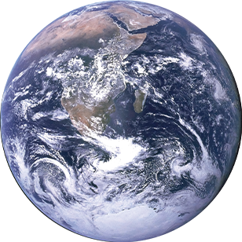
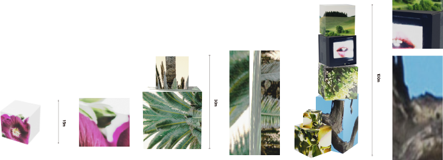

1. 개요
A - 1AU 지구는 예술 분야가 발전된 특별한 지구로[1], 전시회에서 일회성으로 사용되고 버려지는 식물이 많았다. 전시 후 폐기물을 처리하는 과정에서 새로운 결합으로 인해 ‘큐브 식물’ 이 발견되었다. 이 식물은 ‘현재 지구’ 의 식물과 같이 광합성과 물을 통해 성장한다. 그렇지만 높은 전염성[2] 을 갖고 있다는 점과, 크기도 계속 커지는 점 때문에 부동산 문제 및 관상 문제가 발생하여, A - 1AU 지구에서는 ‘현재 지구’ 의 식물, 즉 기존의 식물을 다시 되돌리기 위한 연구를 진행 중인 것으로 보인다.
2. 설명
unsoiled 가 처음 마주한 평행우주인 A - 1AU 지구는 첫 번째 접촉 시에는 현재 지구와 별다른 차이가 없는 것처럼 보였다. 사람들이 여전히 존재하며 살아갔고, 도시는 여전히 북적였다. 그러나 보다 철저한 조사를 통해 우리는 이 A - 1AU 지구에서 운영되는 다수의 전시장을 확인할 수 있었다. 현재 지구에서 개최되는 전시의 횟수나, 열리는 주기 등으로 비교했을 때, 이곳에서는 훨씬 더 다양한 전시 활동이 이루어지고 있음을 관찰했다. 이러한 현상을 통해 A - 1AU 지구에서의 예술은 새로운 차원으로 확장되어 가는 것으로 예측할 수 있었다. 다양한 분야의 발전은 현재 지구에서도 이루어지고 있었지만, A - 1AU 지구는 이례적으로 예술 분야의 진보가 압권으로 보였다.
이곳의 예술가들은 창의력을 극대화하고 놀라운 작품을 창조하는 데에 노력을 모두 쏟아냈다. 그리고 이를 대중에게 보여주기 위해 다양한 종류의 전시를 개최했는데, 그러나 이러한 작품들은 특이하게도 단 한 번의 전시를 위해 만들어지고 쉽게 버려지는 것들처럼 다루어지고 있는 것으로 확인되었다. A - 1AU 지구의 CCTV 장치에 접속할 수 있었던 우리는 이를 확인할 수 있는 단서로는 전시장 근처나 골목 뒤편에서 발견된 전시용품들을 발견했다.
3. 발생 원인
이 특이한 발견은 예술 전시와 관련된 장비 및 작가들의 작품을 처리하는 과정에서 가정 내 폐기물 처리와 유사한 방식으로 이루어진 것으로 보였다. 또한, 이러한 폐기물 처리장과 같이 보이는 골목이 여기저기에 존재했으며, 이러한 지역에서 우리는 흥미로운 현상을 관찰했다. 그 흥미롭고도 이상한 현상은 마치 전시 쓰레기에서 영향을 받은 것처럼 보이는 큐브 모양의 식물이 자라나고 있었다는 점이다. 이 발견은 CAM 284[2]를 통해 최초로 확인하였다.
4. 특징
이 독특한 생물체인 ‘큐브 식물 (cube plants)’ 은 그 크기가 다양하게 나타났으며, 총 세 가지의 크기 범주고 구분할 수 있었다. 이러한 크기 범주는 가장 작은 것이 15cm² 에서 시작하여 30cm² 까지 자랄 수 있었으며, 가장 큰 큐브 식물은 최대 100cm² 까지 성장이 가능한 것으로 보였다.

가장 작은 큐브 식물인 15cm² 크기는 한 면의 면적으로, 일반적으로 사람 손의 한 뼘 정도의 너비를 나타낸다. 이것은 큐브 식물의 가장 작은 개체가 상당히 작은 크기를 가지고 있다는 것을 의미한다. 중간 크기의 큐브 식물은 보통 개별 개체가 결합한 경우로 가정했을 때, 평균적으로 작은 나무의 높이와 비슷한 정도의 높이를 가지고 있었다. 이러한 큐브 식물은 여러 개체가 연결되어 복합적인 구조를 형성함으로써 다양한 형태의 식물을 만들어 내는 것으로 관찰되었다.
이러한 크기는 해당 식물의 생장 정도를 나타내는 중요한 지표였으며, ‘큐브 식물’은 현재 지구의 다른 식물들과 비슷하게 광합성 및 수분 이용 능력을 효과적으로 활용하여 놀랍도록 빠른 속도로 성장하고 있는 것으로 보인다. 더욱 놀라운 사실은 이 식물이 높은 전염성을 갖고 있었으며, 서로 다른 크기의 ‘큐브 식물’ 개체가 결합하여 더 크고 다양한 형태의 식물들이 나타나는 것을 확인할 수 있었다.